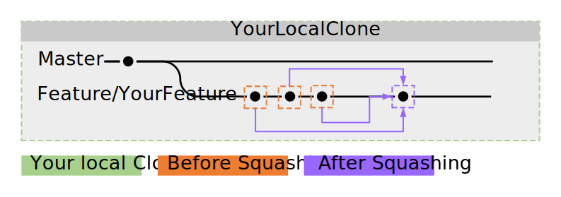

Инструкция по Git(Hub)¶
Если Вы хотите помочь в создании губки, у Вас есть какие-то дополнения к API или Вы хотите усовершенствовать наши документы, тогда вам стоит ознакомиться с git и GitHub. Если Вы уже знакомы с этим (forking, branches, issues, pull-requests и commits), просто пропустите этот раздел. Если Вы понятия не имеете, о чем идёт речь, то читайте дальше.
Примечание
This guide assumes that you’ve read Установка Git and that you’ve already setup your machine with a Git client of your choice.
Основная концепция Git и GitHub¶
Git позволяет многим разработчикам одновременно разрабатывать одну часть программного обеспечения. GitHub — это веб-сайт, на котором разработчики могут сотрудничать и обмениваться своей работой с другими пользователями. GitHub использует Git для управления указанной работой.
Совет
Если вам непонятна лексика Git или GitHub, взгляните на словарную страницу GitHub.

В этом случае у репозитория SpongePowered``имеется две ветки под названием ``master и feature 1 и несколько коммитов на обеих ветках.
Давайте рассмотрим общую концепцию — начнём с репозитория. Репозиторий (от англ. repository; сокр. репо) это место, где хранятся файлы проекта. Репозитории SpongePowered хранятся на GitHub. Однако у этого репо есть ограничения доступа, для охраны его от нежелательных и вредоносных изменений. Вы не сможете самостоятельно внести изменения, так как для обычных пользователей репо доступно только для чтения. Сейчас Вы можете задаться вопросом, как же Вам вносить изменения. Для этого существуют форки (forks). Вы можете взять копию репо SpongePowered и вносить необходимые изменения там. По завершении вы можете отправить его на наш репозиторий в качестве запроса (Pull Request, PR). Предложенные вами изменения будут рассматриваться и наши сотрудники сообщат Вам об ошибках или возможности улучшения, и в конечном итоге проведёт слияние запроса (Merge Pull Request).
Ниже приведено краткое изложение описанной выше процедуры, прежде чем вдаваться в подробности:
- Форкнуть репозиторий на Ваш выбор
- Клонирование его на Ваше устройство
- Создание новой ветки
- Внесение необходимых изменений
- Проверка на работоспособность
- Фиксация изменений
- Синхронизация изменений на GitHub
- Предложение изменений на репо SpongePowered в качестве PR
- При необходимости внести изменения в PR
- Команда внедряет ваш PR в ветку master
Подробнее, пожалуйста!¶
1. Создание форка репозитория¶
Примечание
Этот шаг необходим при условии, что у Вас нет соответствующих прав на репозиторий, куда вы хотите внести изменения. Если это Ваш репо, то ничего форкать не нужно. Просто пропустите этот шаг и выполните clone напрямую. Если же Вы вносите изменения в репо Sponge и не состоите в команде, этот шаг необходим.
Поскольку концепция вам уже известна, мы обсудим детали. Сначала Вам нужно форкнуть репозиторий, куда вы хотите внести изменения. Это можно сделать с помощью GitHub.com, где Вы можете найти кнопку Fork вверху страницы репозитория. После её нажатия GitHub выполнит работу и предоставит Вам клон оригинального репо. Заметьте, что клон теперь находится на ВашGitHubАккаунт/НазваниеКлонированногоРепозитория. Итак, первый шаг завершен.
Примечание
All branches from the original repository will get forked too, you receive an exact clone of the forked repo.

2. Клонирование форка на Ваше устройство¶
Now you need to get this fork to your local machine to make your changes. Open the Git Client of your choice
(Установка Git) and clone your fork to your local machine. The client will ask you for a folder to store
everything in. Second step finished, well done!
Примечание
Most steps can be done via GUI of your choice. If you’re experienced with a command line interface, then you can use it too. Each step will show you the required commands to achieve the desired result.
Alternatively, you can do this via CLI (command line interface, CMD or powershell on windows). Note
that you need to create the folder everything is getting cloned to yourself before typing this command:
git clone git://github.com/YourGitHubAccount/ClonedRepoName.git

3. Создание новой ветки¶
Теперь, когда у вас есть локальный клон Вашего форка, пришло время создать ветку для работы. Ветви были спроектированы таким образом, чтобы они могли одновременно разрабатывать и тестировать различные функции или дополнения, не вызывая проблем и ошибок из-за вмешательства дополнений. Настоятельно рекомендуется не вносить свои изменения в ветку master. Вместо этого создайте новую ветвь самостоятельно (с разумным именем) и внесите изменения туда.
Это означает, что нам нужно сначала создать branch (ветку), так что давайте! Вы можете сделать это через Ваш клиент (где-то должна быть кнопка create branch (создать ветку)), или вы можете использовать CLI с git:
git checkout -b [name_of_your_new_branch]
This will create a branch with the name of your choice and switch to it. All changes you’re about to make will be
on this branch. If you need to switch to another branch (for example master), just reuse this command. Third step
done! Good job so far! To get an overview of your branches, just have a look at your git client or use:
git branch

Теперь пришло время вносить изменения. Для этого можно использовать редактор или IDE, на Ваш выбор.
4. Проверка на работоспособность¶
Для SpongeAPI и реализаций вам нужно запустить gradle compileJava. Переходите к следующему шагу, если оно завершится без ошибок. Если этого не произойдет, внесите соответствующие исправления и повторите попытку.
Для SpongeDocs вы можете просто отправить свой PR. Он будет автоматически собран и отобразит возможные ошибки. Другой вариант — создать документацию локально. Посмотрите на Readme.md в документации для дальнейших инструкций.
5. Применение изменений¶
When you’re done, you need to bundle them into a single package (a commit) and get them into the branch. Again, your
git client will help you out. Add a meaningful name to your commit and a short description if needed. This can be done
via CLI too:
Сначала соберите все файлы и папки, которые вы хотите поместить в коммит:
git add <file>
git add <folder>
Теперь, когда файлы добавлены в список изменений, которые вы хотите включить в коммит, просто выполните
git commit
Это откроет текстовое окно, где вы можете добавить сообщение, если пожелаете. Взгляните на сообщение ниже. Вам необходимо запомнить, что ваши коммиты сохранены только локально, не на вашем форке GitHub.
Примечание
У Вас может быть несколько коммитов в PR. Просто продолжайте и изменяйте всё, что вам нужно, и фиксируйте изменения. Позже Вы сможете объединить коммиты в один.
Шестой шаг завершен. Почти закончили!

6. Отправка на GitHub¶
Теперь нам нужно внести изменения в Ваш форк на GitHub. Все, что Вы уже сделали, сейчас храниться лишь локально. Как и всегда, вы можете использовать ваш git-клиент для этого (есть кнопка где-то в вашем GUI), или вы можете сделать это через CLI:
git push <remote> <branch>
В этом случае оно должно выглядеть так:
git push origin feature/YourFeature

7. Предложение изменений на репо SpongePowered в качестве PR¶
You can either go to your forks page on GitHub.com (there should be a notice at the top of your forks page to guide you), or you can use your GitHub client to create a pull-request. The official GitHub for Win client uses the top right corner of the window for this.

8. Внесение изменений в PR при необходимости¶
Если нам необходимо внести изменения в Ваш PR, просто сделайте больше коммитов для ветки, созданной выше. Дальнейшие коммиты будут автоматически добавлены в ваш PR.
9. Ваш PR подключают¶
Ну вот, всё готово! Отличная работа!
Расширенный Git¶
Объединение и перемещение¶
Let’s say you have finished your additions to the repo, and let’s pretend that you made 137 commits while getting it
done. Your commit history will certainly look cluttered. It would be a shame if they were all recorded into the repo,
wouldn’t it? Too many trivial commits also clutters the project commit history. Fortunately, Git has a nice tool to
circumvent this, it’s called a rebase. Rebasing can take your 137 small commits and just turn them into one big
commit. Awesome, isn’t it? Instead of reinventing the wheel, we’ll just pass you a link to a very short and easily
understandable squashing tutorial:
Gitready: Squashing with Rebase (англ.)
Это визуальное отображение того, что он делает:
Настройка удалённого репозитория¶
Naturally the original repo is the direct parent of your fork and your fork is the direct parent of your local clone. However, the original repo isn’t the direct parent of your clone. This isn’t a problem in the first place, but it prevents you from updating your clone to the latest changes on the original repo. If you setup the original repo as a remote (read: «parent») of your clone, you’ll be able to grab all changes made to this repo and apply it to your local clone. Look below to see how grabbing and updating works.

Хорошо. Этот шаг выполняется с помощью CLI, поскольку большинство графических интерфейсов не обладают этой (довольно продвинутой) функциональностью:
git remote add upstream https://github.com/ORIGINAL_OWNER/ORIGINAL_REPOSITORY.git
Если вы не уверены, работает ли это по назначению или вы хотите проверить, какие удалённые репо в настоящее время установлены, Вы можете проверить с помощью:
git remote -v
вывод должен выглядеть так:
origin https://github.com/YOUR_USERNAME/YOUR_FORK.git (fetch)
origin https://github.com/YOUR_USERNAME/YOUR_FORK.git (push)
upstream https://github.com/ORIGINAL_OWNER/ORIGINAL_REPOSITORY.git (fetch)
upstream https://github.com/ORIGINAL_OWNER/ORIGINAL_REPOSITORY.git (push)
Примечание
Если вы видите предупреждение fatal: The current branch НазваниеВашейВетки has no upstream branch., тогда ветвь может не находиться на удаленном удаленном сервере. Это может произойти, если вы первый раз отправляете коммит на новую ветвь. Чтобы обновления текущей ветки и установки удалённого upstream, используйте git push --set-upstream origin НазваниеВашейВетки.
Перемещение¶
Допустим, Вы внесли некоторые изменения в свою желаемую ветку, но в то же время кто-то ещё обновил репо. Это означает, что Ваш форк и Ваш клон устарели. Это не большая проблема, но чтобы избежать проблем при последующем слиянии ваших дополнений, мы настоятельно рекомендуем провести rebase ваших изменений в отношении последних изменений в исходном репо. Если вы еще не настроили удалённый репозиторий, сделайте это до повторной установки.
A successful rebase requires several steps:
1. Загрузка изменений на удалённый репо¶
Сначала вам нужно получить изменения в удалённый репозиторий. Это (снова) делается через CLI:
git fetch upstream
Это добавит все изменения с удаленного upstream и поместит их во временную ветвь upstream/master.
2. Слияние удалённых изменений локально¶
Теперь нам нужно выбрать нашу локальную ветвь master:
git checkout master
После этого мы объединим изменения, которые включены в upstream/master, в нашу локальную ветвь master:
git merge upstream/master
Хорошо, вот что у нас получилось:

3. Rebase локальной ветки в обновлённую Master¶
Следующим шагом является rebase локальной ветви, с которой вы работаете, на место локальной master. Нам нужно переключиться на вашу рабочую ветвь (здесь: feature/yourfeature), а затем выполнить rebase. Это делается с помощью:
git checkout feature/yourfeature
git rebase master
Это перемотает ветку, добавит коммиты из мастера и затем снова применит ваши собственные изменения. Результат выглядит следующим образом:

4. Отправьте всё в Ваш форк¶
Последнее, что нам нужно сделать, это отправить всё в форк. Если вы уже создали PR, он автоматически обновится:
git checkout master
git push -f
git checkout feature/yourfeature
git push -f

Вы сделали это, потрясающе! Отличная работа!